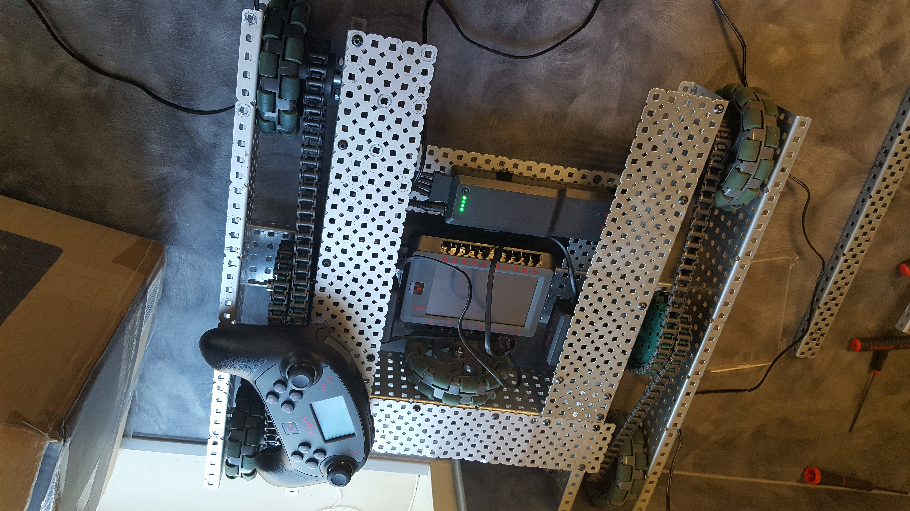
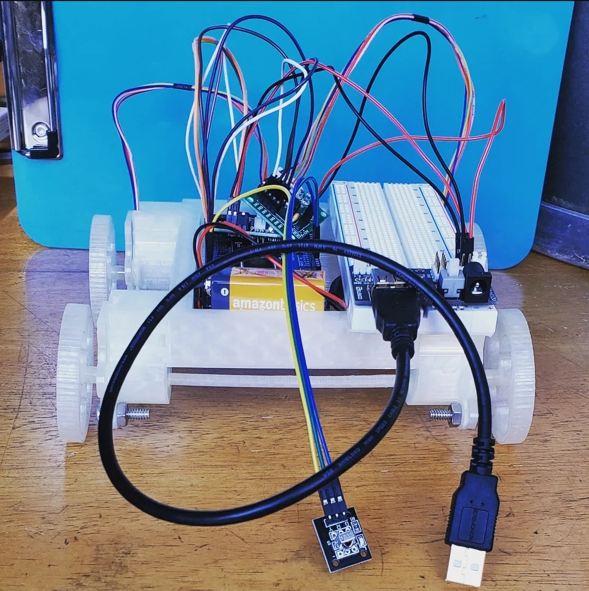

Inspiration
This project started after a summer college course involving heavy coursework with Vex robotics. As my team started contributing less and I took on more of the workload, I learned I had a deep love for pushing the robot to its limits and experimenting with its programming. Our robot (below) ended up looking, and working, great! After adding other features, competing (and failing) in several challenges, and learning more about the programming and automation process, I felt fairly confident in my robotics skills.

With that new love for robotics, I decided to continue robotics as a hobby. After looking at the prices for Vex components, I realized I would have to take on a much harder project: building and integrating my robot's systems from scratch.
I had experimented with Arduinos before and had basic components, so I ordered a handful of stepper motors with their control boards and set to work designing everything I'd need to 3D print and put it together.
Design
The first thing I knew I'd need was some way of mounting motors to a body to hold my electronics. I had ordered a popular brand of stepper motors so I pulled its 3D model from McMaster-Carr into Fusion 360.
After looking at my available bolts, I realized the screw holes were too close to the motor body for my nuts to fit, and decided to hold those screw holes with pegs while holding the whole motor with a face-plate screwed into the motor mount (below) attached to the main body.

The next major need was wheels. Since these needed a solid fit to the motors shaft, I decided they would need a few iterations. I took the same 3d model, and built a stub to go over the shaft I could use to test its fit with a super small tolerance. The first few iterations were too tight, but eventually I got a solid fit that stuck fairly well but was easy to attach to the motors. I designed a simple wheel (below) at the end of the stub and printed it.

I then built a simple body (below) for the robot to dump the electronics and batteries in, and put everything together. The robot was designed to be either 4 or 2 wheel drive, depending on the electrical load the motors put on my batteries, so I printed an axle to go in the back for 2-wheel drive. This never worked, thanks to me not knowing what a differential was at the time and having a single axle for both wheels that didn't allow the robot to turn. Luckily, with how slow the robot ended up being, my batteries were enough for 4-wheel drive.

Code
Now came the part that interested me the most: programming. I decided early on that the best way to test my robot in its entirety was to stay simple, and try to just make a remote-controlled chassis. As it turns out, remote control is actually much more difficult than I had hoped.
I had only one remote I could use with my arduino without buying a wifi or Bluetooth chip: a simple IR remote and receiver.
I coded different numbers on the remote to different directions, and programmed the main loop of the program to constantly wait for those button presses and take a step on the appropriate motors when they were pressed.
This program was terrible. Arduinos only have one processing core, and at least in my setup, interpreted each button hold as just one long press with a significant delay as the stepper motors moved and the loop restarted. This means the entire robot could only move 1 tiny step at a time, and you essentially had to press the forward button every couple seconds for a minute or two to get even close to going anywhere.
At this point I was somewhat exasperated, and instead of rewriting my entire program, decided instead to just change the step count per press to 50. This wasn't the level of control I wanted, but was enough to finish integration and at least work on a different part of the project.
Further Revision
At this point I had a somewhat functional prototype (below) with several problems.
- My motor mounts were secured only from the bottom, meaning the whole robot was quite unstable.
- No 2-wheel drive.
- The wheels had a great fit to the motors in their rotational axis, but had nothing keeping them from being pulled off the side. When turning, or when the instability of the robot got too bad, wheels were able to fall off.
- No continuous remote control, and frankly poor programming in general.
- The batteries needed for the motors and control system were larger than anticipated, meaning the robot was too small for its own electronics, and it looked something like an overflowing plate of spaghetti wires with wheels under it.
- The entire robot was made of 3D printed PLA, which was strong enough for all applications, but meant the ridged wheels still slipped terribly on hard flooring, which was the only surface the robot had enough torque to drive on.


At this point, my frustration with the project was quite close to matching my drive to learn more by continuing it, so I decided to work on the issue that interested me the most: wheel material.
My 3D printer uses a Bowden tube extruder, which is significantly worse with flexible filaments, but I had been wanting to try TPU for a while, so I ordered some and made several test prints.
Once it was dialed in enough (though admittedly still not great) I printed the wheels.
This helped with the problem, but the outer rim of the wheels was designed too thick to add much traction, and the connection to the motors was too thin to be fully stable.
Having iterated so far though, and having a prototype that had largely satisfied my curiosity, I gave up.
Lessons Learned
The robot I would build now would be better in every conceivable way. Since I finished it, I've learned to program a Raspberry Pi I bought with Python, and with my further programming knowledge and the Pi's bluetooth chip, I could make a dramatically better control system. I have a much more finely tuned process for printing TPU, and a better understanding of using weight distribution for better traction. The design would be tighter, the build better, and the software much more functional.
This project did, however, give me some great experience with “integration hell” and continuously iterating an early prototype. I've developed a long-lasting passion for robotics and automation, and have continuously tinkered with different microcontroller projects since. What I've learned from this, and following projects, has been very useful.
- A project can have parts that take inspiration from a million sources. The same simple robot can take inspiration from automotive, aerospace, and manufacturing industries.
- Don't get too set in one way of doing something. This project would have turned out far better if I was willing to spend a little bit of time and filament rebuilding and solving problems one by one.
- It's okay to get something done poorly to do it properly later.